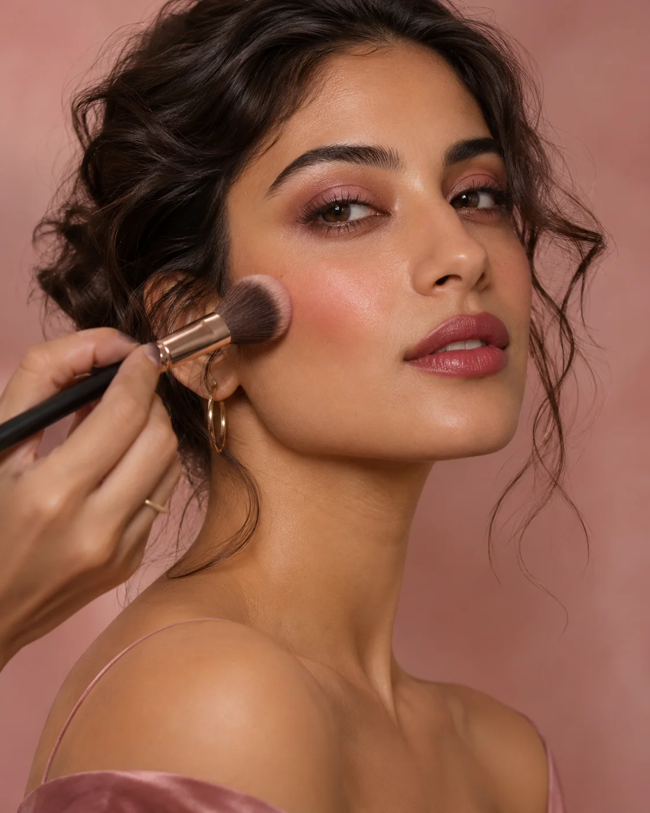

Maquiagem social
Produção para encontros e ocasiões especiais, com acabamento alinhado ao seu estilo.
Consultar horárioUma experiência de maquiagem pensada para valorizar seus traços e acompanhar os momentos que importam.
Conhecer os serviços
A proposta da Aura Makeup é colocar sua identidade no centro de cada produção. Referências, preferências e o estilo da ocasião ajudam a orientar uma escolha de maquiagem com personalidade.
Do visual leve ao mais marcante, cada serviço apresenta uma possibilidade de expressão. Conheça as opções e encontre a produção que combina com seu momento.
Serviços, durações e valores ilustrativos.
Produção para encontros e ocasiões especiais, com acabamento alinhado ao seu estilo.
Consultar horárioUm visual expressivo para festas, formaturas e celebrações.
Consultar horárioUma proposta personalizada para o grande dia, com referências e detalhes combinados previamente.
Consultar horárioEsta página faz parte de um portfólio demonstrativo. Explore outros segmentos e conheça novas possibilidades.